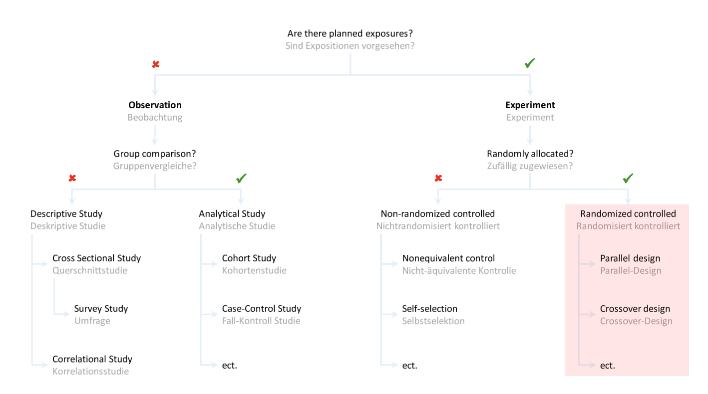
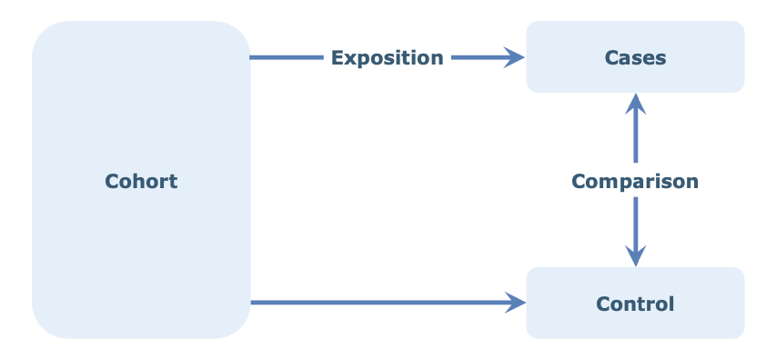
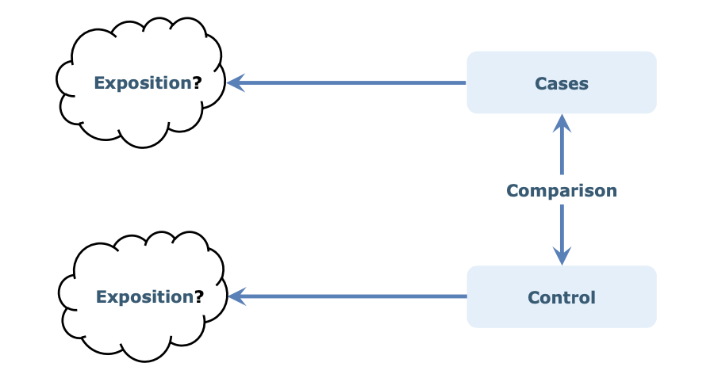
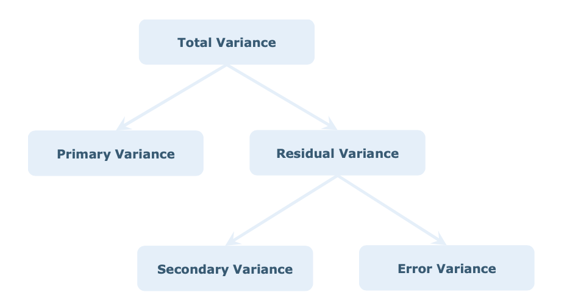

Research Design
Introduction
Quantitative methods with hypothesis testing are designed around the principles of critical rationalism (Karl Popper). This philosophical position states that theory can never be finally verified but only falsified.
Descriptive statistics can only describe the sample as a subset of the population. Inferential statistics draws conclusions about the population based on the sample.
Research Design
 ## Observational
Descriptive character, suitable for forming hypotheses (but not optimal for testing a hypothesis)
Cross Sectional Study (e.g. Survey)
- no group comparison
- e.g. “Quality of Life of Master Students”
Correlational Study
- no group comparison
- e.g. “Time spent on self-study and general quality of life correlate.”
Analytical study
- group comparison
- Identification and quantification of effects / verification of relationships
- Not fully suitable for hypothesis testing
Example: Cohort Study
Multiple cohorts (group of people with comparable inital conditions) are observed. One cohort is exposed to certain factors. Cohorts are compared after
- Smoking and Alzheimers

Case Control Study
- Retrospective comparing cases with controls (self-reports?)

Other Forms
- Cross-over design: during study treatment and control switches
- used in randomized and non-ramdomized (quasi)
- Before / After comparison
- Longitudinal studies:
- Trend study: different times with diff. samples
- Panel study: different times with same sample
Variance as basic concept
- Primary variance:
- Impact of (experimental) factors on the change / variantion of the output
- Secondary variance:
- Variation of output caused by nuisance variables
- Error variance:
- caused by measurement errors and random processes

Experimental Design
Example: determine which variables have an influence on petrol consumption.
One-Factor-at-a-time (OFAT)
Full factorial designs
Fractional factorial designs
Quality criteria of experiments
Internal Validity
- is essential condition for external validity.
- Changes in dependent variable clearly attributable to changes in independent variables.
- Increases with decreasing impact of nuisance variables (Quasi-Exp -> Experiment).
External validity
- Results of experiment can be generalized to population
- increases with increasing naturalness (laboratory -> field)
- high internal validity can be problematic for external validity (labor vs. field)
Population validity
- selection of representative sample
Situation validity
- generalizable to situations deviating from experiment (ecological validity)
Construct validity
- adequate operationalization of latent variable (construct)
Sampling
Lecture 05
Sample Size, Power, Effect Size
Lecture 06